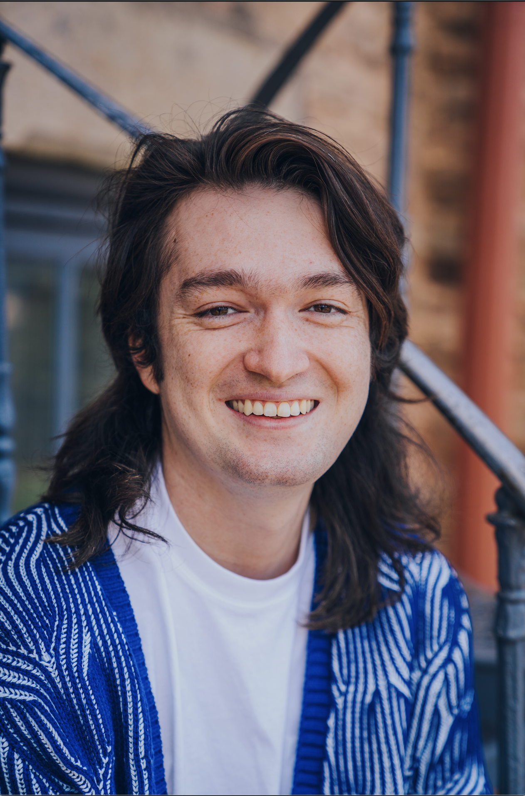

As a recent college graduate, I was prepared to start the next era of life. However, with a degree in music, the job search was extremely challenging. It was time to pivot. How can I remain creative while supporting myself and my long term goals? That's when I found UX design. I’m a huge problem solver, and puzzle-finisher. UX design is a puzzle- and it's the designer's job to move the pieces around to complete their jigsaw. UX design and song writing are similar- they exist to convey. Music is obviously about conveying emotion, sometimes love, or anger, or loss. The same idea applies in UX design, but it's products and ideas that are being conveyed. A client will present a design need or want for their project, and it’s my job to carry that idea from the starting point to the finish line.
I have vast experience working with people, companies, and government. Between organizing festivals, securing park and building permits and grants, I’ve spent plenty of time drafting ideas and presentations to achieve my goals. Being a team player is very important when working large events. I’ve worked with a non-profit since 2017, and have worked with their team to help craft the current version of their website. Community involvement is a huge part of my life, and I’ll continue to participate within my community at large. My design journey started in 2018 when I designed my first website with a few friends for a local band. Since then, I’ve familiarized myself with ProCreate, Figma, and Adobe Creative Cloud to assist my ideas in design. As a college student in Music Studies, I found myself creating album art and updating websites nearly as often as I was creating music. My life revolves around art and design, and I hope to find a position in the industry that allows me to be creative while staying consistently busy. My dream is to own a home with my love, Adriana and our cats Pepper and Batman. Those three ladies (Batman is a girl kitty, long story) are my drive and why I’m pursuing a career in design and tech at large. Since I was a child, growing up in Brighton, Colorado I always knew that I wanted to live a life as creatively as possible. UX design is my pathway to this life. I’m extremely driven to create the life I dream of, and will work as hard as possible to realize that. I know that this career will take in directions that I can’t even imagine. I’m looking forward to having new experiences that this career will give me. I’m excited to bridge the gap between UX design and my passion for music. Now, as a designer in Denver, Colorado, I’m creating my path and am ready to take the next steps into the realm of UX. My path doesn’t stop at design, though, but I’ll plan to keep bolstering my resume with further ideas and more certificates. I’m a lifelong learner and I hope to experience many different industries and places to call home in my lifetime.
Denver, CO
August 2017-December 2021
October 2022-Present
November 2017-Present
June 2022-Present
July 2022-Present
Conduct user surveys and interviews to unlock relevent qualitative and quantative data sets.
Genereate diagrams to help relay all data collected to stake holders and clients.
Create intuitive and sleek interfaces that allow users to interact with the client's data.
Abide by all feedback from clients and stakeholders to create seemless iterative design.
Organize events and construction. While working on an Eagle Scout project, raised $43,000 in cash and in-kind donations to build a Veteran's Memorial in Brighton, CO.
While working with a nonprofit, organized and executed management of a two stage, 15 artist festival in Boudler County Fairgronds.